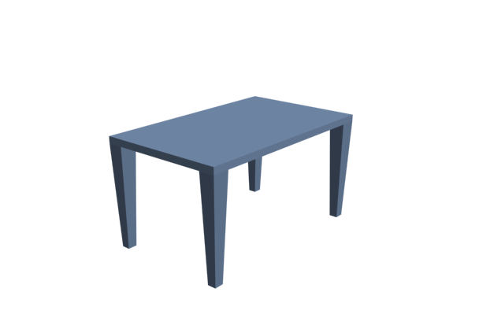
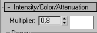
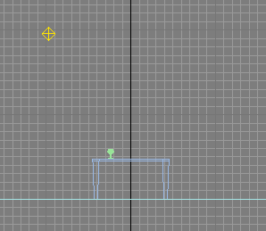

Je me lance après avoir hésité longuement... Ne voyant pas de tutoriel sur 3ds Max sur ce site vraiment génial j'ai décidé d'apporter mes connaissances. Alors je vous présente le premier tutoriel pour les Zéros du logiciel 3ds Max. :zorro:
La version utilisée ici est 3ds Max 9 mais ce cours est valable pour les versions suivantes (et ceci pour longtemps je pense) ! Cela dit j'essaierai de tenir à jour mes tutoriels et de mettre en place une section "Autres" concernant les versions plus récentes.
3D Studio Max est le logiciel de référence en terme de 3D au cinéma, dans les jeux vidéos et est présent dans de nombreux domaines tels que l'architecture ou la publicité. Pour ne pas me faire taper sur les doigts je rajouterai qu'il ne faut pas mettre trop loin les autres logiciels tel que Maya, Blender ou combustion vis à vis de 3ds Max... :-°
Je vous souhaite une excellente lecture, n'hésitez pas à poster des commentaires positifs ou négatifs : tout est utile !
Le panneau le plus utilisé de 3ds Max est probablement le panneau latéral droit (command pannel) :
J'ai mis 6 couleurs différentes en dessous de chaque onglet :
Le premier onglet (rouge) est le panneau Create.
Le second onglet (vert) est le panneau Modifiers.
Le troisième onglet (bleu) est le panneau Hierarchie.
Le quatrième onglet (rose) est le panneau Motion.
Le cinquième onglet (orange) est le panneau Display.
Le dernier onglet (noir) est le panneau Utilities.
J'espère que vous êtes prêt pour la suite ! Je vous invite très fortement à aller faire un tour dans l'annexe, côté Interface et Vues, car cette introduction ne présente que les points indispensables pour débuter.
Dans cette partie vous allez créer et ajouter des objets dans une nouvelle scène. Cela va rester très basique mais je suis sûr que vous allez apprécier !
Pour commencer vous allez faire un reset de votre scène actuelle. Pour cela je vous invite à cliquer sur File/Reset dans le menu puis à cliquer sur YES !
Voilà, vous avez devant vos yeux une nouvelle scène toute propre et toute vide !
Sélection du dossier pour vos sauvegardes
Pour bien faire les choses nous allons enregistrer cette scène, mais avant il faut que nous définissions le dossier ou nous mettrons tous nos projets 3D. Personnellement, j'utilise le dossier /3ds max 9/scenes/ qui est d'ailleurs défini à l'installation. Pour les personnes désirant changer, voilà comment il faut procéder :
Cliquez sur File puis Set Project Folder.... Une fenêtre apparait, sélectionnez simplement le dossier où vous souhaitez mettre vos sauvegardes.
Enregistrement de la scène
Dans l'ordre, et comme dans tous les logiciels :
File
Save
Le dossier de base est soit 3dsmax/scenes soit le dossier de votre choix (voir ci-dessus)
Choisissez un petit nom pour votre sauvegarde, moi j'enregistre sous le nom de maScene.max
Validez par 'ok'
C'est bon, votre scène est enregistrée !
Mais, elle est vide ?
Bien sûr ! Mais c'est pour prendre de bonnes habitudes que je vous fais faire ça : 2h de modélisation et 3ds Max qui plante, je ne vous explique pas la tête que vous pouvez tirer si vous n'avez rien sauvegardé ! :lol:
Le cube possède une hauteur, une largeur et une longueur identique. Dans le panneau latéral (command pannel) dans Create, qui doit être sélectionné par défaut, sélectionnez box.
Creation Method Ceci permet de choisir quel type d'objet 'box' vous voulez créer, le type cube ou le type box (= pavé).
Keyboard entry Permet de créer un objet en sélectionnant les coordonnées voulues puis la taille voulue et puis en validant. Personnellement je ne l'ai jamais utilisée...
Length Segs : Nombre de segments sur la longueur. Width Segs : Nombre de segments sur la largeur. Height Segs : Nombre de segments sur la hauteur.
Les segments correspondent à la division d'un objet en plusieurs faces.
Voici une box avec 4 segments de hauteur :
La même avec 1 seul segment :
Création
Donc revenons à nos moutons, créez un cube en sélectionnant cube dans Creation method puis dans la vue qui vous voulez, cliquez et restez appuyé sur le clic gauche, un cube apparait et grandit ou rétrécit lorsque vous bougez la souris !
Relâchez le clic gauche, ne faîtes pas attention à la taille du cube dans un premier temps. Voilà votre premier objet 3D est créé !
Modification des paramètres
Sauf que moi je vous demande un cube de 20 x 20 x 20 ! Ici, deux situations sont possibles :
Si vous n'avez rien touché après avoir relâché le clic gauche vous devriez pouvoir accéder au sous-menu parameters. Dans ce menu vous avez Length, Height... ! Changez simplement la taille de votre cube en y entrant les valeurs 20, 20, 20 dans Length, Width et Height.
Si vous n'avez plus la fenêtre à droite avec les propriétés du cube, et bien c'est que vous avez cliquez depuis tout à l'heure ! Ce n'est pas grave, cliquez sur votre cube dans la vue (il devient blanc lorsqu'il est sélectionné) et allez dans l'onglet à droite de Create : il s'appelle Modifiers (en vert ci-dessous).
Dans cet onglet vous devez avoir en haut en dessous de modifier list le mot BOX et tout en dessous le menu de modification de notre cube ! Faites alors la même manipulation en changeant toutes les valeurs de hauteur, largeur et longueur par 20 !
Pfiouuu on a fini de faire notre cube... Allez on fait notre pavé !
Création du pavé
De manière identique que pour le cube, allez dans Create puis sélectionnez box ! Par contre vous ne devez pas avoir cube de coché dans Creation Method mais bien box .
Un clic gauche maintenu dans une vue vous permet de choisir la largeur et la longueur lorsque vous bougez votre souris. Relâchez le clic et bougez votre souris : la hauteur est réglable ! Une fois que vous avez la hauteur voulue effectuez simplement un dernier clic gauche ! Voilà votre pavé est créé !
Allez dans l'onglet Modifiers et changez les valeurs de la box par :
Length : 100
Width : 40
Height : 40
Voilà votre objet est fini ! Passons à la sphère...
Création d'une sphère
Retournez dans l'onglet Create et choisissez cette fois Sphere. Ne faites pas attention à la Creation method pour la sphère, laissez celle de base. Identiquement, vous faites un clic gauche maintenu dans une des vues pour créer et agrandir/rétrécir la sphère ! Relâchez votre clic pour finir la création. Enfin un clic droit pour quitter la création. Allez dans Modifiers et modifiez la valeur du rayon : radius à 15 !
Maintenant que vous avez fait tous les objets de votre scène vous allez recentrer la vue sur l'ensemble de la scène pour avoir une meilleure vision :
Dé-sélectionnez tous les objets en faisant un ou plusieurs clic gauche dans une des vues dans un endroit vide !
Cliquez sur Zoom extents all ou Zoom extents Selected en bas à droite de l'écran dans le panneau inférieur.
Zoom extents all - Permet de recadrer sur toute la scène même lorsqu'un objet est sélectionné. - Permet de recadrer sur toute la scène même lorsqu'un objet est sélectionné.
Zoom extents Selected - Permet de recadrer sur l'objet sélectionné ou sur toute la scène si aucun objet n'est sélectionné.
Enregistrement
Terminé ! Enregistrons maintenant notre scène...
Non ! Ne passez pas par File/Save ! Vous commencez à être habitué au logiciel, faites un effort voyons ! Le raccourci CTRL + S est là pour vous faciliter la tâche, et vous fera prendre la bonne habitude de profiter des multiples raccourcis claviers utilisables lors des manipulations ! ;) Bon cela dit, vous pouvez tout de même le faire via le menu si vous préférez, mais je vous conseille de prendre le coup !
Vous avez appris dans cette partie à créer et modifier les valeurs des principaux objets que sont box et sphere. Sachez que dans l'onglet Create il y a plein d'autre objets, mais nous les verrons plus tard !
Passons maintenant au rendu, parce que sans rendu vous voyez bien que votre scène n'est pas très utile... :magicien:
Un très très gros morceau de 3ds Max... Je ne vais pas faire un cours sur toutes les possibilités disponibles dans le logiciel mais plutôt sur ce que vous devez au minimum savoir pour faire vos premiers rendus ! Let's go ! :ninja:
En premier lieu, avant tout rendu il faut que vous sélectionniez la vue que vous souhaitez rendre. Autrement dit vous allez sélectionner la vue perspective de maScene.max .
La vue active étant la vue entourée d'un contour jaune, vous allez appuyer sur F9 pour faire le rendu de cette vue !
Waouh ! C'est quoi ça ?
Et bien votre vue perspective a été rendue ! Un moteur de rendu a traduit les positions des objets dans la scène pour créer une image 2D.
F9 permet de faire un rendu sur la vue qui a été rendue en dernière. Autrement dit, si vous sélectionnez la vue TOP et que vous appuyez sur F9 ça sera la vue perspective qui sera de nouveau rendue...
Pour remédier à ce problème vous pouvez appuyer sur F10 ! Une fenêtre apparait :
Time output Permet de sélectionner sur quel intervalle de temps vous voulez faire votre rendu (si vous avez une animation dans votre scène). Gardez Single !
Output size Permet de sélectionner la taille du rendu. A la place de Custom, il y a une multitude d'options. Gardez Custom dans un premier temps. Vous pouvez modifier Lenght et Widht à votre guise, essayez tout de même d'entrer des valeurs connues, 1024x768 par exemple. A droite il y a quelques valeurs pré-enregistrées. 800x600 est la plus utilisée.
Options N'y touchez pas pour l'instant.
En bas à droite, le gros bouton RENDER. Permet de rendre la vue active et non la dernière vue rendue.
Il est inutile de trop discuter du rendu pour le moment, retenez simplement comment rendre une vue particulière (via F10) et comment sélectionner la taille de l'image de sortie.
Nous allons juste voir comment changer le fond noir de notre image de rendu. En effet ce n'est pas du plus bel effet, ce noir !
Deux manières encore pour accéder au menu Environmement, soit via le menu Rendering/environnement soit via la touche de raccourci 8 du clavier !
Background C'est la partie qui nous intéresse, en cliquant sur la couleur noire et vous aurez une palette qui va apparaitre : cela correspond à la couleur de fond ! Mettez blanc pour le moment, c'est le plus couramment utilisé.
A droite il y a environnement Map et en dessous une longue case. Un glissé déposé d'une image sur cette case met en fond l'image. Nous verrons ça dans un autre chapitre plus tard.
Global lighting Correspond à la lumière de l'environnement. N'y touchez pas.
Global effects Permet d'ajouter des effets à la scène, nous verrons cela plus tard également.
Nouveau rendu
Alors maintenant que vous avez changé la couleur de fond en blanc, faites un nouveau rendu sur la vue perspective :
Sélectionnez la vue Perspective
Appuyez sur F10
Appuyez directement sur ENTRER si les options sont bonnes
Alléluia !! :ange:
Bon, vous n'êtes pas encore des pros du rendu sous 3ds Max, mais au moins cette petite initiation vous a permis de rendre facilement et rapidement une scène que vous avez fait !
Voilà cette initiation est terminée ! J'espère que ça vous a plu et que vous êtes prêt à plonger dans le monde de la 3D dans le chapitre suivant !
Fonçons joyeusement vers la modélisation Low poly ! :zorro:
Front, top, bottom, left, right, perspective, back... il y a 7 vues disponibles dans 3ds Max. Nous allons ici voir comment tout cela fonctionne et comprendre les déplacements que l'on peut faire dans l'espace.
Ce chapitre est purement technique, je vous invite à y revenir en cas de doute.
Voici ce que vous voyez au milieu de votre écran :
Comme vous le constatez il y a 4 vues différentes. Top, left, front et perspective ! Si on traduit en français, cela donne vue du dessus, vue de gauche, vue de face et vue en perspective.
Astuces !
Si vous passez votre souris sur la bordure centrale des vues, vous pourrez constater que vous pouvez déplacer par un clic gauche les fenêtres et les redimensionner à votre guise.
Un clic droit sur la bordure et vous pouvez sélectionner 'reset view' : action qui remet toutes les vues dans leurs dimensions initiales.
Un clic droit sur le nom de la vue fait apparaitre un menu :
Nous allons principalement retenir 3 sous-menus :
Views
Permet de sélectionner la vue désirée : top, front, etc...
Raccourcis claviers > Vous pouvez changer directement la vue de la vue active par ces raccourcis :
t : top
f : front
p : perspective
l : left
Show grid
Coché par défaut, il permet d'afficher ou de faire disparaitre la grille de la vue active. Raccourci : g
Configure
Je vous laisse explorer les onglets, regardez notamment le deuxième 'Layout' qui permet de sélectionner le style de positionnement des vues de 3ds Max ! Personnellement je garde la disposition de base...
Voici plusieurs outils de déplacement et surtout des raccourcis qui vont vous simplifier la vie autant que possible !
Pan view : En bas à droite de l'écran, permet de faire des translations.
Arc Rotate : En bas à droite de l'écran, permet de faire des arcs de cercles dans l'espace (jaune = sous-objet sélectionné // gris = dans toute la scène // blanc = autour de l'objet). Restez cliqué dessus et vous pourrez sélectionner deux Arc Rotate supplémentaires.
Personnellement j'utilise principalement le jaune ! : En bas à droite de l'écran, permet de faire des arcs de cercles dans l'espace (jaune = sous-objet sélectionné // gris = dans toute la scène // blanc = autour de l'objet). Restez cliqué dessus et vous pourrez sélectionner deux Arc Rotate supplémentaires. Personnellement j'utilise principalement le jaune !
Zoom : En bas à droite de l'écran, permet de zoomer sur la vue active !
Raccourcis INDISPENSABLES :
Molette de la souris : zoomer/dézoomer dans les vues.
Clic central de la souris : pan view, translation.
Clic Central + ALT gauche : arc rotate (celui sélectionné en bas à droite, jaune, blanc ou gris).
Vous avez fait n'importe quoi et vous aimeriez remettre toutes ces vues correctement ?
Cliquez sur
.
Celui de gauche recadre autour de l'objet sélectionné et celui de droite autour de l'objet dans toutes les vues !
Voilà cette partie technique sur les vues est terminée. N'hésitez pas à revenir la lire de temps en temps, une piqûre de rappel, ça fait toujours du bien !
Avant d'attaquer les modificateurs et transformations, nous allons faire un petit point sur les outils permettant de bouger, tourner et scaler (redimensionner) les objets.
Si vous ne pouvez pas sélectionner le cube car il est derrière les autres objets de la scène ou si vous voulez simplement faire un tour autour de votre objet, il vous faut déplacer votre vue avec les outils situés en bas à droite de votre écran :
,
et
Move
Move - Cela permet de bouger les objets dans l'espace.
Ouvrez maScène.max et sélectionnez le cube. Une fois sélectionné cliquez sur Move et dans la vue un axe apparait :
Il y a trois axes, X, Y et Z ! Vous pouvez cliquer sur un des axes ce qui a pour effet de limiter les déplacements sur l'axe sélectionné. Vous pouvez cliquer et garder le clic sur l'axe sélectionné et déplacer ainsi votre objet. Essayez ! Enfin, vous pouvez sélectionner deux axes en même temps en cliquant entre ces axes : les axes sélectionnés s'affichent en jaune !
Amusez vous à déplacer vos objets dans chaque vue, vous pouvez par exemple déplacer dans la vue de LEFT et voir les effets dans les autres vues ! :magicien:
Rotate
Rotate - Permet de tourner les objets dans l'espace.
Cela marche pareillement qu'avec l'outil Move. Les axes sont représentés par des cercles, vous pouvez sélectionner chaque axe indépendamment ou sur tous les axes (en cliquant sur la sphère grise au milieu).
Je vous laisse découvrir et utiliser cet outil !
Scale
Scale - Permet de redimensionner les objets sur un ou plusieurs axes.
Encore d'une manière identique, les trois axes sont affichés et en passant et cliquant sur chacun d'eux vous pouvez changer la sélection. Vous pouvez scaler uniformément l'objet en cliquant au milieu de l'icône, tous les axes sont alors jaunes !
Je vous laisse de nouveau tester cet outil ! Vous devriez être capable d'aplatir votre objet en n'utilisant que l'axe Z ; élargir avec Y et allonger avec X !
Astuces
Déjà vous pouvez retenir qu'un CTRL + Z a pour effet d'annuler votre dernière action, très pratique en cas d'erreur. Vous pouvez enchaîner plusieurs undo à suivre si vos 5 dernières actions (ou plus) ne sont pas bonnes.
Pour naviguer entre Move, Rotate et Scale, vous pouvez tout simplement effectuer un clic droit dans une fenêtre. Une boite de dialogue apparait :
Il vous suffit alors de choisir le type de transformation que vous voulez faire par un clic gauche dessus.
Les trois transformations fonctionnent aussi lorsque vous sélectionnez plusieurs objets en même temps via le maintien de la touche CTRL.
Je ne vais pas vous parler des modificateurs et transformations disponibles, mais plutôt de ce que c'est et à quoi cela peut servir.
Modificateurs ? Que veux-tu dire ?
On parle de Modificateurs les outils que 3ds Max propose pour transformer les objets. Par exemple, un modificateur de lissage peut lisser un objet, un modificateur tordre peut tordre un objet...
Transformation ? Que veux-tu dire ?
On parle de Transformation lorsqu'on change le type d'objet afin de lui appliquer des modificateurs. Par exemple, on peut appliquer une transformation Editable poly à une box afin de modifier son maillage (déplacement de points, extrusions de faces, ...).
Pour bien comprendre je vous invite à réinitialiser 3ds Max (File > reset : YES) pour faire un petit test ensemble !
Vous allez créer une box au milieu de votre scène. Ajustez votre vue avec
en bas à droite. Vous devriez avoir ceci :
Mais pourquoi tu as des lignes au milieu ?
Alors plusieurs choses, déjà vous allez modifier le nombre de segments de votre box dans le panneau modifiers (onglet Modifier) et vous allez mettre la valeur 3 dans chacune des case de segments (Length segs, Height segs...etc). Normalement vous ne devriez pas voir les segments dans la vue perspective ! Si vous ne les voyez pas, sélectionnez votre vue perspective en cliquant dedans et appuyez sur F4 ! Retenez ce raccourci !
Si cette manip' ne fonctionne pas vous pouvez toujours faire un clic droit sur le mot perspective en haut à gauche de votre vue et cliquer sur Edged Faces dans le menu qui apparait.
Voilà vous avez normalement la même chose que moi, si on met à part la couleur. Peu importe !
Nous allons appliquer une transformation à cette box. Sélectionnez la et allez dans l'onglet Modifier.
Vous pouvez voir le nom de votre objet "Box01" pour moi et vous pouvez le changer si vous le désirez dans cette case. Laissez Box01 pour que l'on se comprenne. En dessous du nom vous pouvez voir 'modifier list' et une grande case avec box dedans.
Cliquez sur modifier list pour faire apparaitre la liste des modificateurs et transformations disponibles dans 3ds Max. Choisissez Edit Poly dans la liste. Normalement il s'est ajouté au dessus du mot box dans la grande case que nous allons d'ailleurs appeler maintenant modifier stack.
A gauche de Edit poly dans le modifier stack il y a un petit "+" , cliquez dessus et une sous-liste apparait.
Si vous cliquez sur polygon par exemple vous allez voir que la ligne polygon devient jaune. De plus, si vous avez l'œil vous pouvez remarquer qu'en dessous dans le panneau latéral il y a des petits icônes rouges et qui deviennent jaune lorsque vous passez entre polygon, vertex, edge, border ou element. Vous pouvez aussi bien sélectionner ces méthodes en cliquant sur les icônes ou en cliquant sur la liste dans le modifier stack comme vous venez de faire. Deux manières pour la même chose.
Bon, sélectionnez Polygon dans la liste. Dans votre vue de perspective votre box est sélectionnée, vous allez cliquer sur une face dessus... Normalement elle devrait se sélectionner et devenir rouge (si elle a juste un contour rouge vous pouvez appuyer sur F2 pour changer de mode d'affichage).
Félicitation vous venez de sélectionner votre première face 3D de votre vie !
Allez on va faire un petit truc maintenant, vous allez faire un clic droit dans la vue perspective et normalement si votre face est sélectionnée vous devriez avoir deux nouveaux menus qui apparaissent ! Dans le menu gauche en bas cliquez sur Extrude.
Positionnez votre souris sur la face sélectionnée et cliquez en maintenant le clic, bougez alors votre souris... Magie ! Relâchez votre clic et la face devient immobile ! Vous venez de créer une extrusion d'une face !
Entrainez vous à faire des extrusions dans tous les sens sur la box, changez de face, extrudez, etc... Il n'y a pas de meilleur moyen pour apprendre et comprendre !
Moi j'ai fait ça... quoi ? :lol:
Nous n'avons vu qu'une seule transformation, mais retenez qu'il y en a des dizaines et pour faire des choses de toutes sortes : lisser, tordre, grossir, etc...
Nous les verrons au fur et à mesure dans la suite du cours !
Bon, pour cela nous allons créer une nouvelle scène, donc comme d'habitude : File > reset YES. Save : table.max
Voilà on est prêt à attaquer ! :pirate:
Première chose : réflexion ! Autrement dit, il faut se demander comment on peut faire une table... Pas d'idée ? Et bien moi je propose de faire une box pas très épaisse et on extrudera les coins pour faire les pieds...
Essayons. Créez une box dans la vue de perspective avec ces valeurs :
Sélectionnez votre box et nommez la 'table' dans l'onglet Modifier. Recentrez vos vues et enregistrez la scène.
Nous allons appliquer une transformation nommée Editable Poly. Ne le cherchez pas dans la liste des modificateurs/transformations il n'y est pas...
Cliquez droit sur votre objet dans une vue et dans le menu en bas à droite choisissez 'convert to' puis 'convert to editable poly' ! Voilà c'est fait, dans votre modifier stack vous devriez voir que box a disparue et que Editable poly est apparu !
Passer en mode sous-objet 'vertex' : soit vous cliquez sur le petit + à gauche de editable poly puis sélectionnez vertex, soit vous cliquez sur le premier icône rouge en dessous dans la liste des paramètres appelé 'Selection' (icône avec des petits points rouges).
Normalement un carré jaune entoure désormais l'icône vertex et le mot vertex dans le modifier stack est jauni. Nous allons alors déplacer les points le long des faces pour les replacer d'une manière utile.
Dans la vue TOP sélectionnez vos points de cette manière (points sélectionnés en rouge).
Sélectionnez maintenant l'outil
soit par clic droit > Scale ou en haut dans le panneau supérieur. Sur la vue TOP limitez le déplacement sur l'axe x comme sur cette image :
Maintenant vous allez cliquer sur l'axe x et maintenir le clic pour amener les points sur les bords comme ceci :
Vous pouvez vous aider de cette image qui renseigne sur le déplacement que j'ai fait, valeur affichée en bas dans le panneau inférieur !
Dé-sélectionnez vos points en cliquant dans un endroit vide de votre vue TOP et sélectionnez vos points suivants et pareillement que précédemment, déplacez-les avec l'outil Scale sur l'axe des Y comme tel :
-------->
Dé-sélectionnez vos points en cliquant à côté. Quittez le mode vertex en recliquant sur l'icône ou le mot vertex dans le modifier stack (la couleur jaune disparait). Nous allons remonter la box sur l'axe des Y dans la vue FRONT. Dans la vue de FRONT vous allez faire un clic central (cliquez sur la molette) pour décaler la vue et si vous n'avez pas de clic central faite le avec l'outil
en bas à droite de l'écran. Déplacez la vue pour mettre le trait plus foncé un peu au dessus du bord inférieur de la vue FRONT.
Maintenant sélectionnez votre box si ce n'est pas fait et remontez la avec l'outil Move
. L'outil move se situe soit en haut dans le panneau supérieur soit par un clic droit et Move. Remontez votre box vers le haut d'environ 45 unités sur l'axe Y (vérifiez la valeur en bas de l'écran comme pour les scales précédents). Vous devriez avoir ceci :
Nous allons fabriquer les pieds de la table ! Repassez en mode sous-objet de la table et sélectionnez par contre Polygon !
Vous allez devoir cocher dans le panneau 'Selection' en dessous des icônes de sous-objet la case 'Ignore Backfacing'. Cette option permet d'éviter de sélectionner les faces qui sont à l'arrière de l'objet, seules les faces de devant sont sélectionnées.
Maintenant vous allez faire un peu de déplacement dans l'espace avec l'outil
,
et
.
Sélectionnez en maintenant CTRL ces 4 faces en dessous de votre box :
Passez en mode extrusion (clic droit/menu gauche en bas/extrude) et extrudez en cliquant sur une des faces jusqu'à la ligne plus foncée (vérifiez dans la vue de FRONT).
Si vous avez toujours la sélection de vos pieds de table parfait, sinon re-sélectionnez-les ! Passez en mode Scale et redimensionnez les pieds pour rendre quelque chose de ce genre là :
Voilà nous avons fini de modéliser la scène, je vous l'accorde c'est très très basique mais il faut bien commencer par là !
Nous allons faire un petit rendu de notre vue perspective. Comme je l'ai expliqué dans les parties précédentes, si vous n'avez fait aucun rendu sélectionnez la vue perspective pour qu'elle soit entourée d'un contour jaune et appuyez sur F9 ! Si vous avez déjà fait les fous, sélectionnez la vue perspective et appuyez sur F10 et ENTRER.
N'hésitez pas à changer le fond noir en blanc avec la boite de dialogue 'Environment' (touche 8 du clavier ou Rendering > environnement dans le menu). Changez le noir en haut par du blanc.
Voilà ce que ça donne chez moi :

Vous pouvez bouger votre vue et refaire un rendu etc... Profitez de votre œuvre !! :lol:
Bon et bien les Zéros je vous félicite pour avoir tenu le coup jusqu'ici ! Votre premier objet 3D est modélisé ! Seconde partie, vous allez texturer cette table pour qu'elle devienne un peu plus réaliste (si toutefois on peut dire réaliste ^^ ).
Il faut savoir qu'en 3D il y a plusieurs phases de production pour avoir un objet terminé. Nous avons fait la phase de modélisation et maintenant nous allons voir la phase de texturing.
Le texturing est l'application d'une image ou de plusieurs images 2D sur un objet 3D. Une texture est donc une image 2D comme ci-dessous :
Je vous invite à l'enregistrer sur votre disque dur pour l'utiliser sur notre table.max !
Donc nous allons appliquer cette texture bois sur notre table à l'aide du Material Editor. Le Material Editor est une boite de dialogue dans 3ds Max qui permet de gérer tout ce qui concerne l'application et la modification des textures et matériaux. C'est votre Base de Donnée Image de votre scène.
Matériaux ? Textures ? Quelle est la différence ?
Le bois, la roche, le plastique... sont des matériaux : ils peuvent être granuleux, lisses, mattes ou réfléchissants. La texture, elle, c'est une image, ce que l'on voit, ce qui est "posé" sur le matériau et qui bénéficie des caractéristiques de ce dernier.
Pour l'exemple, une boule de billard : le matériau est de la résine/plastique très dure et très brillante et la texture est la couleur et le numéro. En espérant avoir été clair... :lol:
Les sphères grises Ce sont les matériaux. Elles servent de support pour vos textures, vous allez mettre vos textures dessus ! Une texture présente dans la scène est automatiquement présente ici. Pour changer le nombre de boules par ligne et par colonne un clic droit sur l'une d'entre elle : la sélection tout en bas de 3x2, 5x3 ou 6x4 résoudra votre problème !
Icônes à droite Ne vous en préoccupez pas pour le moment.
Icônes en dessous des sphères grises Alors le premier tout à gauche se nomme Get Material, il permet d'aller chercher des matériaux pré-enregistrés sur votre disque dur. On y revient après !
L'icône du cube bleu et blanc permet d'afficher directement la texture dans la scène ou pas. Pratique pour voir ce que ça donne sans faire un rendu.
Nom et Style Le nom de la sphère grise est affiché, de base : 01 - Default. Vous pouvez le changer à votre guise. A droite de celui-ci se trouve une case avec Standard d'écrit dedans. Cela correspond au style de matériau de votre sphère. On y reviendra progressivement après.
Paramètres L'ensemble des menus en dessous sont les paramètres relatifs au style de la sphère et donc de votre matériau. Vous pouvez gérer la luminosité, la réflexion, la réfraction, la taille, le bump, les couleurs...
Bon vous avez enregistré la texture bois ci-dessus (clic droit > enregistrer sous...). Mettez la dans le dossier que vous voulez mais n'oubliez pas ou vous l'avez mise... :-°
Importer un material
Je vais vous expliquer comment utiliser le Get Material, on ne va pas s'en servir pour le moment mais ça coute rien de s'y arrêter quelques instants.
Ouvrez table.max si ce n'est pas fait et ouvrez le Material Editor via la touche M du clavier ou en cliquant sur l'icône
dans le panneau supérieur à droite. Apparait alors la boite de dialogue. Cliquez sur une sphère, la première en haut à gauche (peu importe en fait...) et cliquez sur Get Material
dans les icônes en dessous.
Une autre boite de dialogue apparait :
Dans le rectangle Rouge Ici est répertorié tous les styles de matériaux que vous pouvez importer ou créer à partir de 3ds Max. Retenez surtout que lorsque vous voulez une texture particulière (ex : métallique) et bien il faut un style de matériau adapté pour rendre un maximum de réaliste (ex : reflet spécifiques au métal).
Dans le rectangle Bleu L'affichage du rectangle rouge dépend directement de cette zone. Elle situe où les styles sont recherchés. Tous les styles, juste ceux de la scène, ceux des objets sélectionnés, etc...
Dans le rectangle Vert Ici vous pouvez changer l'affichage de la liste dans le rectangle rouge pour mieux comprendre ce que les noms peuvent représenter.
Vous allez pouvoir importer vos matériaux maintenant. Je vous l'avait dit que c'était vite fait.
Sélectionnez donc un slot dans le Material Editor(une sphère = un slot) .
Paramètres d'un slot Standard
Le slot est normalement de base du style Standard. On va conserver ce style pour le moment. Dans les paramètres du slot on va voir à quoi servent certaines options :
Options
Blinn dans Shader Basic Parameters correspond au mode d'ombrage utilisé sur le matériau utilisé.
Diffuse correspond à la couleur du matériau.
Specular Highlight correspond au reflet spéculaire du material. Avec ces options on ajoute des effets comme plastifié/métallique à un matériau.
Maps regroupe les caractéristiques du matériau et permet de doser de 0 à 100 les effets de chaque option.
Nous allons importer notre texture bois au slot sélectionné. Pour cela cliquez sur le petit carré grisé juste à droite de Diffuse !
Une boite de dialogue qui ressemble fortement à celle vue précédemment apparait. Choisissez Bitmap en haut de la liste en double cliquant dessus. 3ds Max vous demande alors d'ouvrir un fichier image, allez prendre la texture bois que vous avez normalement rangée dans un petit coin et faites Ok !
Wahou, votre slot a pris la couleur de la texture bois !! :magicien: Vous savez maintenant comment mettre votre propre image sur un slot.
Si vous faites attention, les paramètres Standard ont disparu pour laisser place aux paramètre Bitmap ! Normal, nous sommes dans le sous-mode Bitmap de notre matériau Standard ! Pardon ?
Vous allez comprendre. Changez déjà le nom de l'image bitmap en 'bois' comme j'ai fait et cliquez sur l'icône que j'ai entourée d'un carré rouge au dessus de Bitmap !
Normalement ça vous fait revenir au mode Standard ! Ce bouton sert en effet à remonter dans la hiérarchie de votre matériau !
Donc reprenons, dans les paramètres Standard ouvrez le panneau Maps.
Vous pouvez voir que en face de Diffuse Color il y a maintenant le nom que vous avez mis et le nom de votre texture bois ! A droite de Diffuse Color il y a un chiffre : 100 , c'est le pourcentage de visibilité de votre texture. Si vous mettez 50 et bien elle sera transparente de 50% et vous verrez 50% de la couleur de Diffuse Color choisi en haut.
Bon revenons à nos moutons, remettez 100 dans le diffuse si vous y avez touché ! Nous allons maintenant appliquer ce matériau à notre table sinon ça ne sert à rien... :lol:
Mais je fais ça comment ?
Il suffit de cliquer une fois sur le slot et de maintenir le clic. Puis vous faites un glissé-déposé sur l'objet ! Une autre manière de le faire consiste à sélectionnez l'objet en question et de cliquer sur ce bouton :
Comme vous pouvez voir il y a des petits problèmes sur la texture de notre table... Elle n'est pas uniforme et semble étirée à plusieurs endroits.
Pour comprendre ce phénomène il faut comprendre comment une texture est appliquée. En fait de base comme on vient de faire la texture est appliquée PAR FACE !
Cela signifie qu'il y a une texture entière par face, si la face est très longue et pas large la texture sera étirée sur la longueur et aplatie sur la largeur pour rentrer dans la face...
A gauche la texture de base, à droite en haut une face plus large que longue et en bas à droite une face très longue mais pas large : la texture de base est déformée pour rentrer dans les faces !
Nous avons modifié les faces de notre table lors de la modélisation pour pouvoir extruder les pieds de la box initiale : les faces ne sont plus de la même taille et donc l'application de la texture est difforme !
Mais alors on est foutu ?
Mais non ! Tout est prévu les Zéros ! :magicien:
Nous allons appliquer un Modificateurs pour palier ce problème. Ce modificateur se nomme UVW Map
UVW Map
Sélectionnez votre table dans une vue et allez dans le l'onglet Modifier. Dans modifier list allez chercher tout en bas UVW Map et cliquez dessus.
Les paramètres de l'UVW Map apparaissent en dessous.
Mapping En haut vous pouvez choisir Planar, Cylindrical, box... Ceci correspond au style de mapping appliqué sur l'objet.
Lenght/Width/Height Correspond à la taille du Gizmo d'application de la texture dans l'espace. Plus le Gizmo est grand plus la texture sera étirée et peu répétée, plus il est petit plus elle sera répétée sur l'objet et rétrécie. A changer en fonction des objets et de leur taille !
Gizmo C'est la forme Orange qui apparait autour de votre objet dans la vue perspective !
Nous allons mettre le mode de mapping Box pour notre table. Je vous invite à tester les autres modes. Attention aux valeurs Length/Width/Height qui sont la taille du gizmo et donc de la texture, moi je suis à 64 sur les 3 valeurs. Voilà c'est quand même plus propre maintenant, elle en jette cette table !! :lol:
Voilà, c'est cette partie est terminée ! Content ? J'en suis persuadé... :-°
Nous allons maintenant apprendre à utiliser l'objet de base Plane pour créer un semblant d'environnement. Puis nous verrons comment utiliser l'outil Line et un modificateur spécifique afin de créer notre propre objet 3D : un verre !
Allez dans l'onglet Create et dans les objets cliquez sur Plane.
Créer donc une plane à peu près centrée au milieu de la table,regarder avec la vue TOP, de 300 Lenght x 400 Width,4 segments de Length et 5 de Width. Pour modifier les paramètres de cette plane ça marche comme pour les box : onglet Modifier!
Si votre plane n'est pas centrée sur votre table, déplacez-la avec l'outil Move
Seconde étape : texturer ce sol pour le rendre un peu plus réaliste !
Texturage
Voici la texture que nous allons utiliser, enregistrez-la dans un endroit sûr !
Ouvrez le Material Editor (touche M du clavier). Nous allons importer cette texture d'une autre manière pour vous faire découvrir les options cachées de 3ds Max. Dans les onglets du panneau latéral, allez dans le dernier à droite avec l'image du marteau : Utilities !
Dans les boutons du dessous cliquez sur le bouton que j'ai encadré de vert : Asset Browser.
Donc normalement une fenêtre s'est ouverte, une sorte d'explorateur de votre ordinateur. Allez dans le dossier où vous avez mis la texture de sol ci-dessus. Vous devriez la voir apparaitre et si vous double cliquez dessus elle s'affiche !
Vous allez décaler la fenêtre Asset Browser pour voir le Material Editor derrière et vous allez faire un Glissé-Déposé de la texture sur un slot vide (une sphère inutilisée).
Celle-ci prend alors la texture de votre sol !
Quittez alors l'Asset Browser. Un nouveau glissé-déposé du slot vers le sol dans la vue perspective et hop votre texture est posée !
Nous avons alors le même problème que tout à l'heure : la texture est étirée une seule fois sur tout l'objet sol... Nous allons donc appliquer un modificateur UVW Map pour rectifier tout ça ! Allez dans l'onglet Modifier et ajouter le modificateur UVW Map tout en bas de la liste.
Vous pouvez remarquer que j'ai changé le nom de notre Plane en Sol. Je vous invite vraiment à toujours avoir des noms explicites pour vous y retrouver, question d'organisation !
Dans l'UVW Map passer en mode FACES : la texture est alors bien appliquée.
Allez un petit rendu pour la route :
Bon et bien voilà pour ce Sol ! Nous allons maintenant rajouter quelques objets pour découvrir différentes manières de modéliser.
Allez, nous allons voir comment modéliser un verre assez rapidement !
Première chose : nous allons utiliser l'outil Ligne : Line.
Création d'un verre
Création de la courbe
Une fois sélectionnée, allez dans la vue de face et créez une ligne comme ceci au dessus de votre table (grossièrement) :
J'ai donc mis 13 points. Une fois que vous avez mis grossièrement ces points, passez dans le Modify panel et dans le mode sous-objet du modifier line qui est apparu, sélectionnez vertex.
Modifiez ainsi votre ligne en déplaçant les points un à un via l'outil move
pour que votre verre ressemble à ceci (vous pouvez aussi vérifier avec les images ci-dessus qui sont correctes) :
Nous avons donc maintenant la demi-coupe transversale de notre verre à pied. Nous allons découvrir l'outil Lathe !
Création de notre verre en 3D
Toujours dans le modify panel, dépliez la liste des modificateurs et cherchez Lathe. Appliquez celui-ci en cliquant dessus. Votre modifier stack affiche dorénavant deux modificateurs : Lathe et Line.
Dans vos vues vous avez sûrement remarqué que votre simple courbe s'était transformée en un objet 3D.
Mais où est notre joli verre que tu nous a promis ?
En effet, celui-ci ne ressemble pas vraiment à un verre, nous allons modifier ça dans les paramètres du modificateur Lathe. Alors premièrement testez les options d'axe X, Y et Z qui vous sont proposées, l'objet doit être modélisé sur sa hauteur. Puis essayez les 3 options de rotation, MIN et MAX.
Degrees Permet de choisir l'axe de la rotation en degrés. Si vous ne voulez faire qu'une rotation de 90 degrés, il suffit de mettre 90. 360 correspondant à un tour complet.
Weld Core Fusionner le cœur. Cette option permet de "coller" l'intérieur du mesh pour éviter les trous éventuels. Il est fortement conseillé de cocher cette option, surtout quand vous avez un objet qui doit être plein au centre comme notre verre.
Flip Normals Cette option permet d'inverser les normales. Cela signifie que si vos faces lors de la rotation du Lathe sont à l'intérieur du mesh (créant un effet noir qui ne passe pas au rendu) il vous suffit de cocher cette case pour les retourner. Ici j'ai décoché la case pour notre verre !
Direction Permet de sélectionner la direction du Lathe sur un axe. J'ai fait ma ligne dans la vue de face donc la rotation que je recherche est celle sur les Y (y dans la vue de face). J'ai donc cliqué sur Y.
Align Permet de choisir à quel niveau de la ligne la rotation va s'effectue. La plupart du temps c'est sur le MIN ou le MAX de l'objet. Cela correspond à tourner la ligne sur le point le plus éloigné ou le moins éloigné de l'axe de rotation. Pour nous j'ai donc sélectionné MINIMUM. Il convient de tester les 3 pour choisir le plus approprié.
Voilà nous avons donc notre verre énorme et grossier :
Amélioration du verre
Bon nous allons ajouter un peu de réalisme en adoucissant les bords. Nous pourrions simplement ajouter un modificateur Meshsmooth pour arrondir l'histoire, mais nous aborderons ce modificateur plus tard. Nous allons simplement adoucir via le modificateur Line déjà présent.
Pour cela nous allons modifier le type des points qui forment le contour du verre. Retournez dans le modificateur Line et choisissez vertex dans le menu déroulant. Sélectionnez alors ces points sur le verre :
Puis un joli clic droit sur la fenêtre sur laquelle vous travaillez (moi sur la LEFT), et un menu apparait :
Sélectionnez alors Bezier. Ce mode transforme les vertex (points) de base en Bézier vertex. Votre verre ne ressemble à plus grand chose maintenant, il est tout déformé ! Que cela ne tienne, travaillons maintenant ces Bézier vertex.
Mais... comment ça marche ?
Comme dans tous les logiciels qui utilisent ce genre de points (logiciels vectoriels) : le point est toujours le même, il est relié à deux petits poids (les points verts reliés par un trait jaune)
Ces poids sont déplaçable soit par deux : en cliquant et maintenant le clic sur un des points, puis en déplaçant ce poids. Soit seul, en appuyant sur SHIFT puis en suivant la même méthode ci-dessus.
Les poids permettent de créer un vecteur (courbe) beaucoup plus plaisant que le simple point vertex que nous avions précédemment (arête très dure). Je ne m'attarde pas sur la gestion des Béziers, ce n'est pas très compliqué et avec quelques essais vous aurez le coup de main.
Placez alors les points comme ceci en gérant les poids et les vertex un à un :
Pour avoir un rendu global qui ressemble à ceci :
A vous de voir ce qui se rapproche le plus possible d'un verre, n'hésitez pas à affiner avec le zoom. Pour ma part je m'arrête là, ça suffira.
Aperçu
Retournez dans le modificateur Lathe et regardez votre œuvre ; c'est quand même plus beau maintenant !
Bon, ce verre est géant, n'est-ce pas ? Nous allons le réduire simplement via l'outil Scale :
Cet outil est soit disponible en haut dans le panneau supérieur, ou sinon via un clic droit (menu bas droite). Retournez dans le panneau Create, cela permet de quitter le panneau modifiers qui contient nos modificateurs. Scalez alors uniformément votre verre, selon votre envie.
J'ai déplacé le verre pour qu'il soit posé correctement sur la table ; en effet, lors du redimensionnement il se décolle de celle-ci.
Bon et bien voilà nous avons un verre beaucoup moins Low Poly, maintenant mais au moins il est beau. J'espère que vous êtes fier ! On fait un petit rendu de tout ça (F9 ou F10):
Texture
Allez, on fait vite fait bien fait la texture, c'est pour la forme. Je ne détaille pas les menus et options car nous verrons tout ça dans un tutoriel plus avancé sur les textures. Nous allons donc utiliser un matériau déjà fait.
Appuyez donc sur M pour faire apparaitre le Material Editor. Sélectionnez un slot vide, si vous avez bien suivi jusqu'ici ça ne pose pas de problème normalement. Puis cliquez sur Default (1) et sélectionnez Architectural dans la liste qui apparait. Puis dans le menu déroulant (2) choisissez Glass(clear). Une image pour illustrer :
Appliquez alors à votre verre cette texture par un glissé-déposé sur celui-ci.
Rendu final
Concernant le matériau, il n'est pas parfait, mais c'est un matériau tout fait de 3ds Max ; il est possible de faire nos propres effets de verres à partir d'un matériau de base mais nous verrons tout ça dans un chapitre plus avancé.
Voilà, cette partie est terminée. Comme vous avez pu le voir, l'outil Lathe peut vous permettre de faire une multitude d'objets : bols, verres, bouteilles, etc... à partir de la forme simple qu'est une Line. Votre scène est désormais un peu plus remplie !
J'ai remarqué qu'un mini-tuto était sorti le temps que je finisse de rédiger mon big-tuto : modélisation par révolution (de anto59290). Je vous invite à y faire un tour !
Cette partie va faire un tour rapide des lumières et de leur utilisation. Il faut savoir que la lumière dans une scène est une des choses les plus difficiles à paramétrer. N'étant pas moi même un spécialiste de l'éclairage, nous n'allons ici faire qu'un petit tour explicatif pour vous donner les bases.
Il existe plusieurs types de lumières dans 3ds Max, classés en 2 groupes principaux :
Standard
Photometric
Nous n'aborderons pas les lumières photométriques pour le moment, c'est légèrement plus complexe et surtout plus long à calibrer. Nous allons nous pencher sur les lumières standards. Pour y accéder, allez simplement dans le panneau Create et prenez le troisième icône représentant une lampe.
Voilà, vous avez devant vous la liste des lumières standards de 3ds Max, vous pouvez jeter un coup d'œil aux lumière photométriques en cliquant sur le mot Standard et en choisissant photometric dans le menu déroulant.
Nous allons utiliser principalement ces deux types de lumières : Target Spot, Omni.
Target Spot
Sélectionnez Target Spot et dans une des vues de votre scène cliquez et maintenez le clic puis déplacez votre souris, enfin relâchez le clic.
Qu'est-ce que c'est que ça ?
Vous venez tout juste de créer votre première lampe ! Le premier clic correspond à la position de la source lumineuse (spot) et le déplacement de la souris correspond à la direction du faisceau lumineux (target). Nous avons ici une Target Spot, autrement dit une lumière directionnelle.
Placez maintenant votre Spot au dessus de votre table et placez ensuite la target (la cible) en direction de la table. Je vous conseille d'utiliser la vue LEFT et FRONT pour placer la lampe comme ceci :
Comme vous pouvez le voir, la table ainsi qu'une partie du sol est éclairé. La zone en dehors du faisceau lumineux, représenté par le cône bleu, est donc dans le noir. Si vous regardez bien ce cône vous pourrez voir en fait deux cônes très proches l'un de l'autre. Le premier (bleu clair) est la zone éclairée à 100%, entre le premier et le second cône c'est une partie dégradée de lumière : 100% vers 0% au bord. Le cercle lumineux est donc lissé sur les bords et la coupure entre ombre et lumière est pas tranchante.
Voici un rendu avec un dégradé :
Et sans ce dégradé, vous pouvez voir que la coupure entre le noir et la lumière est très nette :
Omni
L'omni est une lumière omnidirectionnelle, comme son nom le laisse supposer. Elle éclaire de son origine vers toutes les directions. Attention, elle éclaire plus fort lorsqu'on se rapproche et l'intensité diminue lorsque l'on s'éloigne de son origine. Première chose, supprimez la Target Spot de votre scène. Cliquez sur Omni dans le menu Lights et cliquez dans votre scène. Une omni vient d'être crée, elle n'a pas de Target contrairement au Target Spot car elle éclaire dans tous les sens.
Placez cette omni au dessus de la table, assez haut, et faites un petit rendu :
Tadam ! La scène entière est éclairée.
Bon, on s'arrête la pour le moment sur la démonstration des lumières, c'est déjà amplement suffisant. Nous allons voir dans la partie suivante les options de l'omni pour rendre notre scène un peu plus réaliste.
Les paramètres de l'omni se trouvent dans le panneau modifiers. Le nom du type de lumière est écrit et en cliquant dessus un menu apparait en dessous : c'est les paramètres propres à la lumière en question.
En l'occurrence, nous avons une omni light, je vous présente le menu sous forme de tableau explicatif :
1 - General Parameters Vous trouvez ici le type de la lumière qui est modifiable (omni, directional, spot). La partie shadows correspond à l'activation ou non des ombres de la lampe. Shadow Map est le type d'ombrage utilisé.
2 - Intensity/Color/Attenuation Le seul paramètre qui nous intéressera ici est le Multiplier. C'est la puissance de la lampe, à 1 elle éclaire à 100% et à 0,5 à 50%. Il y a aussi un petit carré blanc à côté de ce multiplier, c'est la couleur de la lumière émise.
3 - Shadow Parameters Correspond aux paramètres de l'ombre. L'opacité des ombres, couleur, etc...
4 - Shadow Map Params Ces paramètres changent en fonction du type d'ombrage sélectionné dans la première partie. Ils permettent de gérer tout ce qui concerne la qualité des ombres au rendu.
Nous allons maintenant modifier les paramètres de notre Omni. Dans General Parameters cochez la case On dans Shadows, puis sélectionnez comme type d'ombrage Adv. Ray Traced. Les ombres issues de Adv. Ray Traced sont plus "dures" car elles sont issues d'un lancé de rayon à partir de la source.
Dans Intensity/Color/attenuation : la couleur doit être blanche et l'intensité à 0,8.

Dernier petit réglage : les ombres Adv. Ray Traced. Regardez dans les menus et dépliez le menu Adv. Ray Traced Params, mettez ces réglages :
Je vous explique à quoi ces paramètres correspondent :
Shadow integrity : c'est la qualité du lissage des ombres.
Shadow Quality : c'est la qualité des ombres.
Shadow Spread : c'est l'étalement des ombres sur les bords, une faible valeur donne des ombres très dures et une forte crée des ombres dégradées. Une forte valeur est plus réaliste.
Les deux premiers paramètres jouent sur la qualité de l'ombre, testez pour comparer. Je vous invite vraiment à tester différentes valeurs pour vous rendre compte de l'importance de ces trois paramètres sur la qualité et le rendu des ombres.
Pourquoi nous avons mis l'intensité de l'omni à 0,8 et pas à 1 ?
Et bien l'explication suit, c'est parce que nous allons ajouter une lumière d'appoint pour rendre le rendu global plus réaliste. De plus, cela va permettre d'adoucir les zones sombres de la scène. Premièrement, déplacez l'omni un peu sur le côté, comme cela :

Cela donnera des ombres qui partent un peu sur le côté. Maintenant, vous allez créer une nouvelle omni en retournant dans le panneau Create puis Lights. Placez la de cette manière, environ à 90 ° par rapport au verre :
Allez dans les paramètres de cette nouvelle omni, puis :
Décochez la case On dans General Parameters.
Réduisez l'intensité à 0,2 (on a maintenant un total de 1 avec les deux omnis).
Rendu
Maintenant place au rendu de votre scène.
Vous pouvez voir que l'ombre sous la table est adoucie par la présence de la seconde omni.
Le matériau est à travailler maintenant, faites des tests !
Et bien voilà, cette partie est terminée. Vous en savez un peu plus maintenant sur les ombres et les types de lumières. Nous n'avons pas fait le tour complet, loin de là, mais ça sera pour un prochain tutoriel.
Cette grande partie est finie. Allez donc faire un tour dans l'annexe en attendant un nouveau chapitre sur la modélisation dans 3ds max. ;)
Comme dans tout bon logiciel il y a un MENU ! Oui je parle bien sûr de la barre de menu tout en haut avec File, Edit etc...
Ne vous inquiétez pas si vous n'avez pas 'OgreMax' dans la liste, c'est un plugin que j'ai rajouté.
Dans File nous avons tout ce qui concerne l'enregistrement, la création, etc. Voici en détail les fonctionnalités de ce menu :
New Permet de créer une nouvelle scène vide.
Reset Permet de réinitialiser la scène : vide la scène et remet toutes les dispositions de base de 3ds Max (rétablissement des vues, des outils, etc...).
Open Permet d'ouvrir un fichier .max à partir d'un dossier. Ouverture de vos scènes.
Open Recent A droite, une liste déroulante qui vous propose l'ensemble des scènes ouvertes récemment.
- Save Permet d'enregistrer la scène actuelle. (CTRL+S)
Save as Permet d'enregistrer à un endroit spécifique la scène actuelle, en y faisant une copie.
Save copy as Permet d'enregistrer une copie de la scène ouverte (fonction qui marche avec Save As aussi).
- Merge Vous permet d'importer une scène entière ou quelques objets d'une scène différente vers la scène actuelle.
- Import Permet d'importer des fichiers autres que .max dans 3ds Max, nous citerons notamment le .3ds et le .DWG (AutoCAD)
Export Permet d'exporter votre scène vers un format différent du .max : par exemple en .3ds .
- Summary info Vous donne l'ensemble des informations de base de la scène (nombre de lumières, objets, caméras, etc...) .
File properties Notes à propos de la scène.
- Exit Quitte 3ds Max.
Passons maintenant au menu 'Tools' :
Selection floater Permet de sélectionner grâce à une liste un ou plusieurs objets de la scène. Un outil auxiliaire est le Select Object accessible par le raccourci H du clavier.
Display floater Cet outil permet de masquer (hide) ou démasquer un ou plusieurs objets de la scène.
-
Light lister Cette fonction est un récapitulatif des lumières présentes dans la scène. Il s'avère être très pratique, nous le verrons plus tard.
-
Mesure distance Cet outil permet de mesurer grossièrement des distances directement dans les vues par un clic gauche à un endroit et un second à un autre endroit. L'affichage de la distance apparait alors dans la console tout en bas à gauche du logiciel.
Allez on continue ! :ninja:
Le menu 'Group' :
Group Permet de grouper plusieurs objets de la scène. Par exemple vous sélectionnez deux cubes et vous cliquez sur 'group' : vos cubes seront liés et vous ne pourrez plus les sélectionner indépendamment.
Ungroup Ceci vous permet de dégrouper un groupe que vous avez fait.
-
Open Cet fonction permet d'ouvrir et de modifier les éléments internes à un groupe sélectionné.
Close Cette fonction permet de fermer un groupe que vous avez précédemment ouvert (open) .
-
Explode Ceci explose l'ensemble de la hiérarchie de groupe d'une sélection et chaque élément du groupe redevient indépendant des autres.
Nous allons nous arrêter là pour le menu, car les autres parties ne sont pas utiles pour le moment, nous les verrons progressivement d'une manière pratique plus tard dans ce cours !
Passons maintenant au Panneau supérieur ! :pirate:
Le panneau supérieur regroupe les fonctionnalités les plus utilisées de 3ds Max. Mais détrompez-vous elles ne servent pas toutes non plus... :lol:
Voici notre panneau :
Il n'y a pas de J et alors ? :-° Et comme je crois vraiment qu'un bon vieux tableau vaut mieux qu'un long discours, le voici :
1
Undo Permet de revenir sur l'action ou les actions précédentes (surement le bouton le plus utilisé de 3ds Max :lol: )
2
Redo Permet d'annuler le undo en refaisant l'action annulée.
3
Attach Permet d'attacher des objets entre eux en créant un lien Mère-fille (Premier objet vers Deuxième objet). La mère est indépendante, la fille est dépendante de la mère dans l'espace.
4
Detach Permet de rompre le lien mère-fille créé avec Attach.
5
Selection Filter Permet de filtrer la sélection : uniquement les lumières, les objets, les bones, etc...
6
Selection Le mode de base pour sélectionner les objets. Repasser dans ce mode évite souvent de bouger des objets par mégarde.
7
Select by Name Permet de sélectionner les objets de la scène dans une liste. C'est le Select object vu précédemment.
8
Selection Region Permet de choisir le mode de la zone de sélection : en rectangle, cercle etc... Très pratique pour sélectionner des zones parfois compliquées.
9
Windows Crossing Permet de sélectionner si la sélection se fait lorsque la zone de sélection englobe totalement l'objet ou lorsque qu'elle passe juste dessus.
A
Select and Move Permet de bouger les objets, les points, les faces, les tracés ... dans l'espace (XYZ).
B
Select and Rotate Permet de faire tourner les objets, les faces, ... dans l'espace.
C
Select and Scale Permet de redimensionner des objets, des faces ... sur un ou plusieurs axes dans l'espace.
D
Reference coordinate system Permet de sélectionner le mode de référence des coordonnées des objets dans l'espace.
E
Angle Snap toogle Permet de fixer la rotation de 5° par 5°, ce qui donne une précision moins grande mais permet de tourner facilement des objets dans des angles rond et précis (90°, 105° etc..) parfaitement et rapidement.
F
Spinner snap toogle Permet de rendre les augmentations des valeurs dans les menus d'une manière arrondie. Un peu dans l'esprit de Angle snap toogle (E) mais avec les valeurs des menus.
G
Named selection set Permet de créer une sélection personnalisée rapidement. Sélectionnez plusieurs objets et écrivez un nom pour la sélection, après dans le menu déroulant vous pourrez récupérer cette sélection très facilement.
H
Mirror Permet de faire des copies, références ou instances d'objets par symétrie.
I
Align Permet d'aligner un ou plusieurs objets sur un autre.
K
Material Editor Ouvre le Material Editor pour gérer les textures de la scène.
L
Quick Render Permet de faire un rendu rapide de la scène.
Oui oui, je sais ça fait beaucoup de chose à retenir en peu de temps. Ne vous inquiétez pas, la suite du cours va vous les apprendre progressivement à travers des applications concrètes. Les informations ci-dessus sont un résumé des menus donc vous pourrez y revenir à tout moment.
Le panneau latéral droit regroupe énormément de fonctionnalités présente dans le Menu (file, edit, ...) . Cependant on a plus tendance à l'utiliser pour sa simplicité.
Le voici, le voilà :
J'ai mis 6 couleurs différentes en dessous de chaque onglet.
Le premier onglet (rouge) est le panneau Create. Le second onglet (vert) est le panneau Modifiers. Le troisième onglet (bleu) est le panneau Hierarchie. Le quatrième onglet (rose) est le panneau Motion. Le cinquième onglet (orange) est le panneau Display. Le dernier onglet (noir) est le panneau Utilities.
Je ne vais pas détailler toutes les fonctionnalités de chaque onglet car cela serait vraiment trop long !
Ce qu'il faut retenir c'est que dans chaque onglet il ya des sous-onglets qui donnent accès à d'autres fonctionnalités. Voici globalement ce que l'on peut faire à partir de chaque onglet :
Create
Créer des objets (cubes, sphères, cylindres, tubes, pavés, plane, etc...) Créer des lignes ou objets 2D (carré, rectangle, cercle, segment, ...) Créer des lumières (omnis, target, ...) Créer des caméras dans la scène (target , free...) Créer des helpers Créer des forces ou systems de force (gravité, vent...) Créer des systems (squelette, biped...)
Modifiers
Regroupe l'ensemble des modificateurs disponibles.
Hiérarchie
Permet de gérer les pivots des objets, les limitations dans l'espace...
Motion
Contrôle les systèmes de squelette ou biped dans la scène.
Display
Gère l'affichage et ses options.
Utilities
Regroupe des fonctionnalités supplémentaires comme l'accès au dossier pour importer des textures.
Les cases X Y et Z affichent les modifications qui sont faites sur ces axes dans l'espace lorsque vous utilisez move, rotate et scale. Il est important que vous reteniez leur fonction car ça peut être très utile lorsque vous voulez redimensionner un objet à 50% par exemple !
Partie Clefs
Ici vous pouvez créer des clefs d'animation dans votre scène. Nous y reviendrons plus tard.
Partie Espace et animation
A gauche vous pouvez voir les boutons play, stop, rewind, etc... Ils permettent de jouer les animations que vous avez faites (bientôt :D) ! A droite il y a plusieurs boutons.
La première ligne en partant de la gauche : Zoomer, Zoomer uniformément dans toutes les vues, zoomer au maximum sur l'objet sélectionné, zoomer au maximum sur l'ensemble de la scène.
La seconde ligne en partant de la gauche : Profondeur de champ, déplacement par pas, rotation dans l'espace de la vue (à n'utiliser que sur la perspective !), agrandir la vue active.
Eh bien le cours sur l'interface de 3ds Max est terminé ! Il y a énormément de fonctionnalités et menus que je n'ai pas explorés, mais sachez que si vous retenez tout ce que j'ai mis dans cette partie vous êtes déjà très bien partis ! :magicien:
Et surtout, ce qui est important dans une annexe : ses mises à jour ! Alors revenez souvent. :D